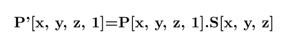

3D SCALING
It is performed to resize the 3D-object that is the dimension of the object can be scaled(alter) in any of the x, y, z direction through Sx, Sy, Sz scaling factors.
Matrix representation of Scaling :

The following kind of sequences occur while performing the scaling transformations on a fixed point –
1. The fixed point is translated to the origin.
2. The object is scaled.
3.The fixed point is translated to its original position.
Let a point in 3D space is P(x, y, z) over which we want to apply Scaling Transformation operation and we are given with Scaling factor [Sx, Sy, Sz] So, the new position of the point after applying Scaling operation would be –

Note : If Scaling factor (Sx, Sy, Sz), then, in this case, the 3D object will be Scaled up uniformly in all X, Y, Z direction.